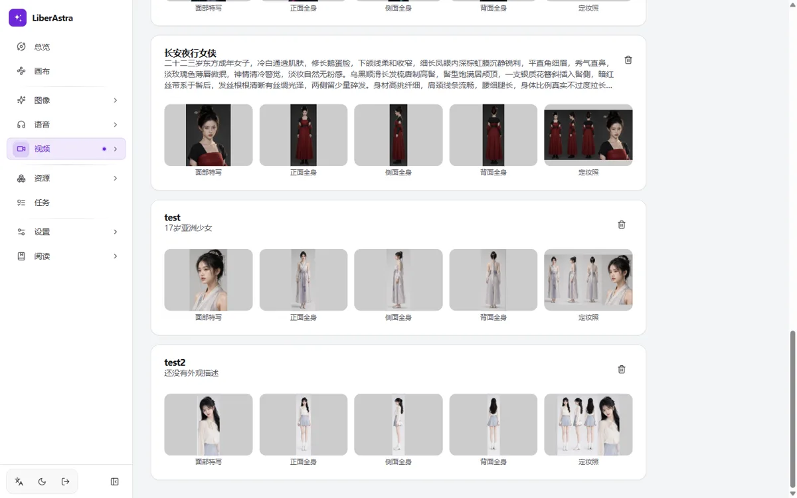

01 / PURPOSE
只编排，
不推理。
Orchestrate.
Don't infer.
LiberAstra 把 ComfyUI、Ollama、语音服务与 OpenAI 兼容 API 收进同一张桌面。模型留在各自的机器里，这里负责把提示词、脚本和素材编排成作品。 LiberAstra gathers ComfyUI, Ollama, speech services, and OpenAI-compatible APIs onto one desk. Models stay on their own machines; this desk turns prompts, scripts, and assets into works.
- 01本地优先Local first模型跑在你的机器或局域网里；平台本身不运行模型。Models run on your machines or LAN; the platform itself does not run them.
- 02编排透明Transparent orchestration每个任务都知道由哪个服务执行、进行到哪一步。Every job knows which service runs it and where it stands.
- 03多入口Many doorsWeb、CLI、MCP 与 OpenAI /v1 共用同一套编排。Web, CLI, MCP, and OpenAI /v1 share one orchestration.
07 / LIBRARY
素材、角色与模板，
随取随用。Assets, characters,
and templates, ready.
角色库保存外观和四段式定妆照；资产库归档图像、视频、音频、字幕；分镜模板设置快速创作的画面样式。The character library keeps looks and four-view sheets; assets archive images, video, audio, and subtitles; storyboard templates set the look of Quick Create.

10 / ACCESS
四个入口，
一套编排。Four doors,
one orchestration.
浏览器、终端、Agent 或 OpenAI 兼容接口，调用同一套 Provider、工作流与任务队列。Browser, terminal, agent, or OpenAI-compatible API: the same providers, workflows, and job queue underneath.
打开就工作。Open and work.
中英文、明暗主题、任务进度与作品库都在同一个浏览器页面里。Bilingual, light and dark, job progress, and the works library in one browser page.
终端里的一行。One line in the terminal.
登录一次，之后用同一套命令出图、出声、出视频，或查询任务。Log in once, then generate images, audio, video, or inspect jobs with one command set.
astra login --server http://127.0.0.1:8000
astra image gen --prompt "一只橘猫" --workflow qwen_image_21 -o ./out
astra tts "你好" --voice zh-CN-XiaoxiaoNeural -o hello.mp3
astra job list --limit 20把五个工具交给 Agent。Five tools for your agent.
generate_image、synthesize_speech、transcribe、create_video、get_job，通过 stdio 暴露。generate_image, synthesize_speech, transcribe, create_video, and get_job over stdio.
{
"mcpServers": {
"liberastra": {
"command": "astra",
"args": ["mcp"],
"env": {
"LIBERASTRA_SERVER": "http://127.0.0.1:8000",
"LIBERASTRA_TOKEN": "astra_..."
}
}
}
}OpenAI 兼容，换一个地址。OpenAI-compatible, one base URL.
chat / audio / images 走同一个 /v1；model 对应你接好的提供方。chat, audio, and images share one /v1; model names the provider you connected.
curl -X POST http://localhost:8000/v1/chat/completions \
-H "Authorization: Bearer <YOUR_TOKEN>" \
-H "Content-Type: application/json" \
-d '{
"model": "your-provider:your-model",
"messages": [{"role": "user", "content": "hi"}]
}'11 / START
把它跑起来。Bring it up.
默认 Docker 单机部署；模型仍在 ComfyUI、Ollama 与语音服务里。Docker on one machine by default; models stay in ComfyUI, Ollama, and speech services.
- 01启动服务Start the stack在仓库根目录执行部署命令。Run the deploy command at the repo root.
- 02创建管理员Create the admin打开 localhost:8000，首次进入即引导。Open localhost:8000; first run walks you through it.
- 03填 ProviderAdd providers设置 → 服务提供方，填地址与密钥。Settings → Providers, then add addresses and keys.
- 04开始出活Make something从提示词到图像、视频、语音。Prompts become image, video, and speech.
docker compose up -d --build
默认监听 http://localhost:8000Listens on http://localhost:8000 by default
模型在你的机器里。LiberAstra 只负责编排。另：liberastra.com.br 是无关的导师网站。Models stay on your machines; LiberAstra only orchestrates. Note: liberastra.com.br is an unrelated mentorship site.